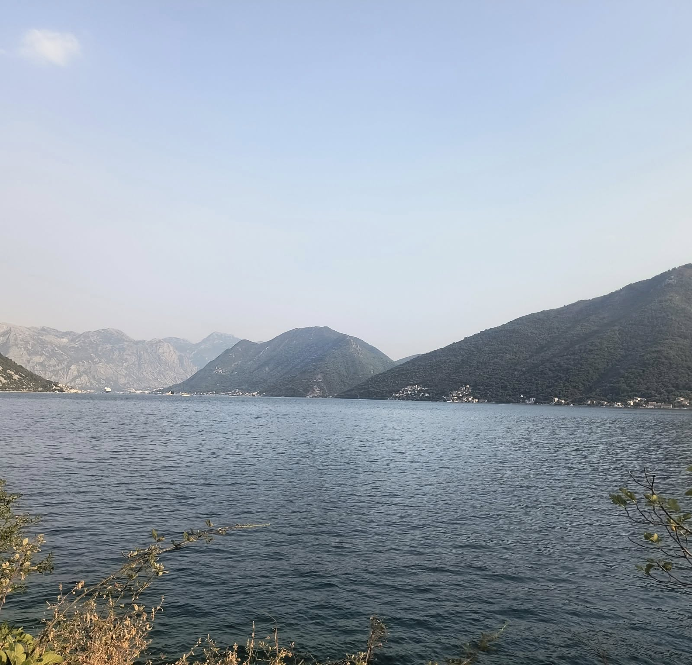
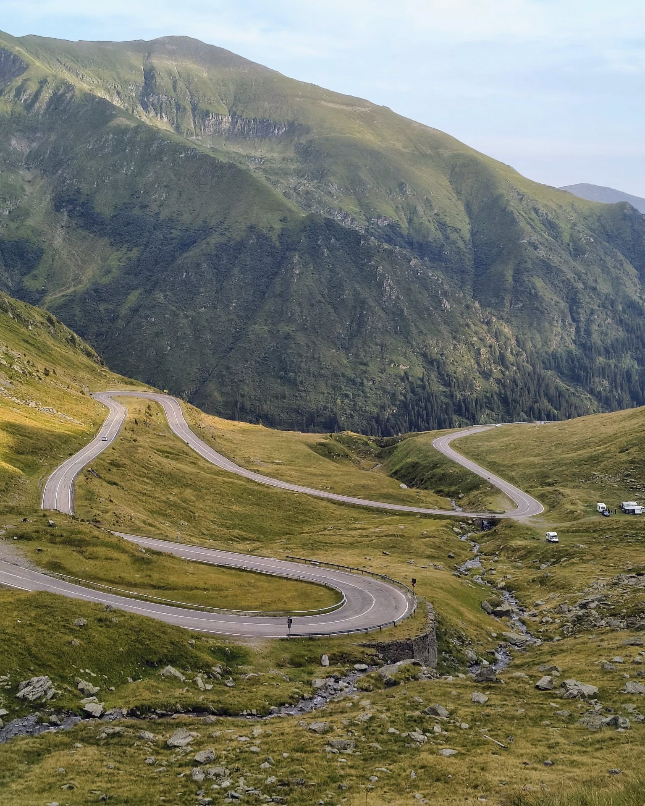
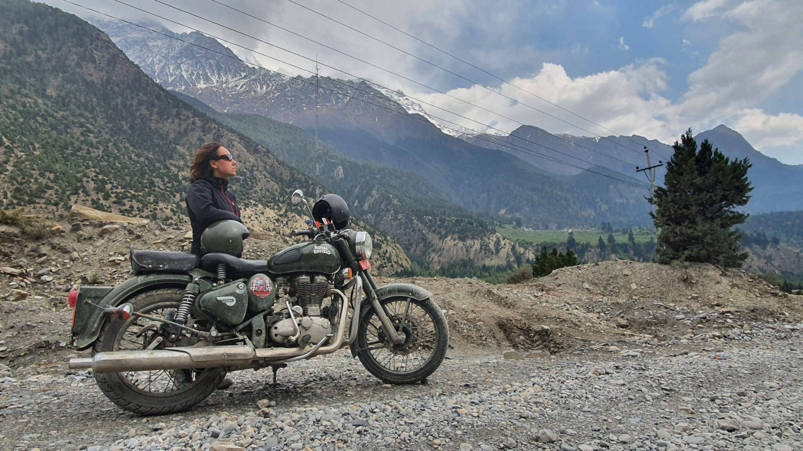
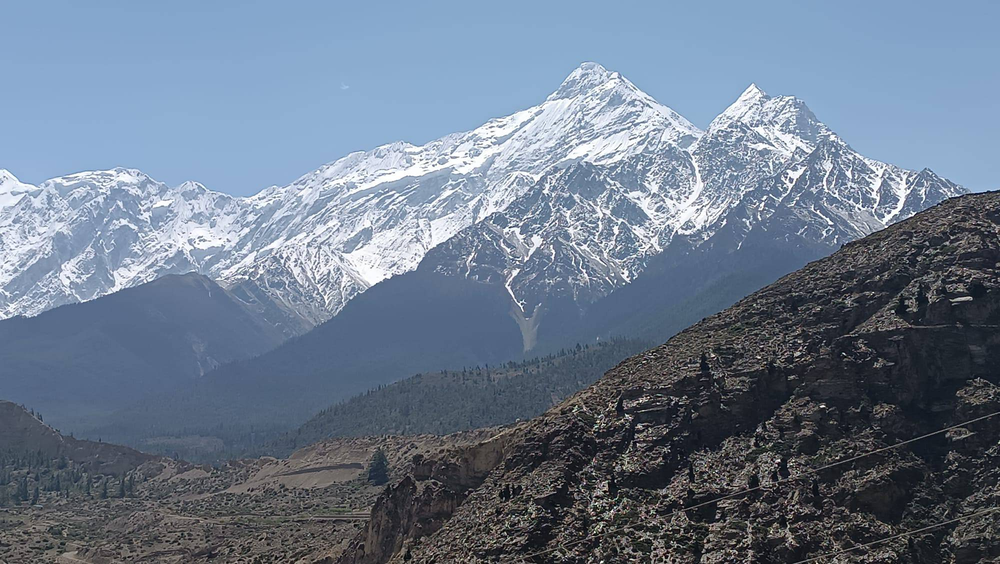

Drogi, góry i chwile zapisane w pamięci
Krótka opowieść z wyprawy — o widokach, ludziach i momentach, które najlepiej wspomina się po latach.
Czytaj więcej →podróże · góry · ludzie · historie
Nie zbieramy rzeczy.
Zbieramy historie.
Posty z podróży
Krótkie wpisy, wspomnienia i opowieści z miejsc, które zostają z nami na długo.

Krótka opowieść z wyprawy — o widokach, ludziach i momentach, które najlepiej wspomina się po latach.
Czytaj więcej →
Podróż to nie tylko punkt na mapie — to historia, zapach miejsca, rozmowy i droga, której nie da się zapomnieć.
Czytaj więcej →
Niektóre podróże kończą się po powrocie. Inne zostają z człowiekiem i wracają przy każdym zdjęciu.
Czytaj więcej →Spotkania
Raz do roku nasze drogi spotykają się w jednym miejscu. To czas, kiedy odkładamy plecaki, siadamy razem i dzielimy się tym, co przywieźliśmy z różnych zakątków świata.
Opowiadamy o wyprawach, górach, poznanych kulturach i chwilach, których nie da się zamknąć wyłącznie w fotografiach.
Nasze spotkania to nie prelekcje — to rozmowy ludzi połączonych ciekawością świata, pasją do podróży i chęcią odkrywania tego, co znajduje się za kolejnym horyzontem.

Galeria
Zdjęcia z naszych podróży. Góry, szczyty, morza, inne kultury, spotkania i wszystkie wspaniałe miejsca, które zostają w pamięci.